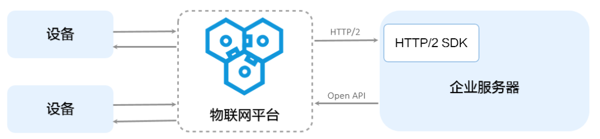

什么是物联网平台？
阿里云物联网平台为设备提供安全可靠的连接通信能力，向下连接海量设备，支撑设备数据采集上云；向上提供云端API，指令数据通过API调用下发至设备端，实现远程控制。
物联网平台也提供了其他增值能力，如设备管理、规则引擎、数据分析、边缘计算等，为各类IoT场景和行业开发者赋能。
可大致用这个图来概括

topic：
物联网平台中，服务端和设备端通过 Topic 来实现消息通信。Topic是针对设备的概念，Topic类是针对产品的概念。产品的Topic类会自动映射到产品下的所有设备中，生成用于消息通信的具体设备Topic。
在物联网平台创建一个产品，并在其下创建一个对应的设备，此设备下的topic列表会出现多个topic。如下，我创建了有一产品，其下有一个设备DS18B20，其topic列表如下：

其中最下面三个topic用户可在产品栏中设置其状态（订阅，发布，订阅和发布）
最上面的post是用于上报设备的属性，设备操作权限为发布，但是我是用mqtt.fx和C-SDK提供的接口去订阅，是可以的。发布到post的topic主题，会在设备的运行状态中显示，如下：

同测试，发现1，2，3，4，5都可以被发布和订阅，而只有1是会被记录在设备的运行状态中的，而且其数据格式必须为JSON格式，而2，5可以订阅和发布，数据格式为任意，3，4，可被订阅和发布，使用mqtt.fx测试订阅并在一次发布后就会断开连接，而使用C-SDK订阅和发布均不会断开连接。这是本人的测试结果，使用的是mqtt.fx和C-SDK测试。


在之前，一直纠结一点，设备将温度发布到物联网平台，此数据要被其他用户获取，该怎么做，想到设备是可以订阅自己发布的topic的，便想到使用设备三元组再连接到物联网平台获取温度，但是这样会使设备端与平台断开连接。

此账号为设备的账号，其用户名是唯一的，只能一处登录。
那如何实现用户获取设备发布到平台的数据呢，或者说，实现这张图：

查阅阿里云有关物联网的文档后，发现C-SDK实现平台到服务器（或说到用户）的。


所以在平台和用户之间，是不能用C-SDK开发的，因此，使用C-SDK只能做到设备向平台发送数据。